OTIUM is the practice of deliberate leisure. In the classical sense, otium is not escape from work but time when attention returns to memory, landscape, and thought — without a utilitarian deadline.
We shape routes for lingering, not for checklist tourism. The goal is presence in a place rather than consumption of sights.
OTIUM is not a tour operator. It is an invitation to walk, pause, and leave a route unfinished if the light on a façade deserves another minute.
Исторические и справочные гербы
Guide. Places in this edition: 12.
Стамбул — крупнейший город Турции, мост между Европой и Азией у пролива Босфор.
Византийский Константинополь и османский Стамбул наложили слои: Айя-София, великие мечети, базары и дворцы. Сегодня это мегаполис с богатой кулинарной, музыкальной и торговой традицией.
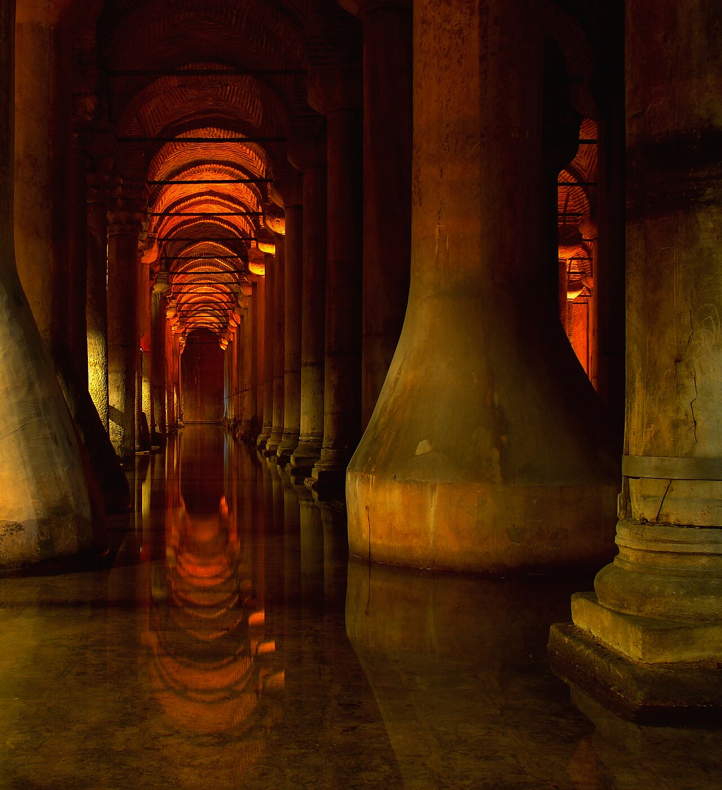
Forest of recycled Corinthian columns reflected in shallow water with modern walkways and lighting.
Stored water for the Great Palace quarter before Ottoman reuse and rediscovery.
Underground counterpoint to Hagia Sophia's dome above.
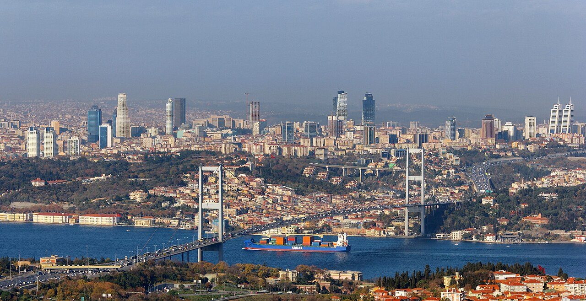
Public ferries link Europe and Asia with cheap decks for photographing yalı waterfront mansions, mosques, and bridges in sequence.
Maritime suburbs grew along steamboat routes; modern catamarans shorten peak-hour crossings.
The calmest city tour is often a round trip on the water.
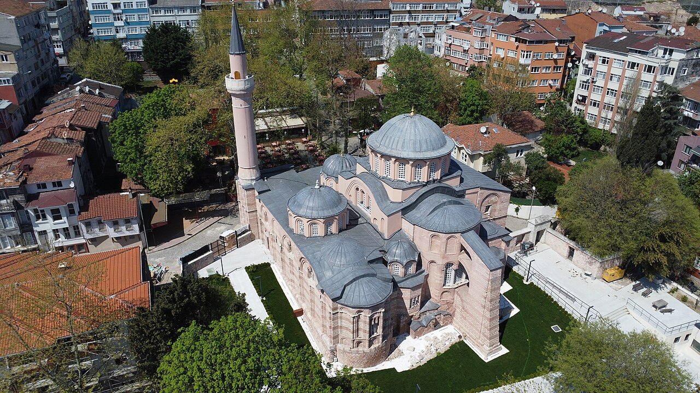
Restored mosaic and fresco cycles narrate Mary's life in intimate side chapels.
Theodore Metochites sponsored the Palaiologan redecoration before Ottoman conversion.
Finest surviving Constantinopolitan narrative art outside the major museums.
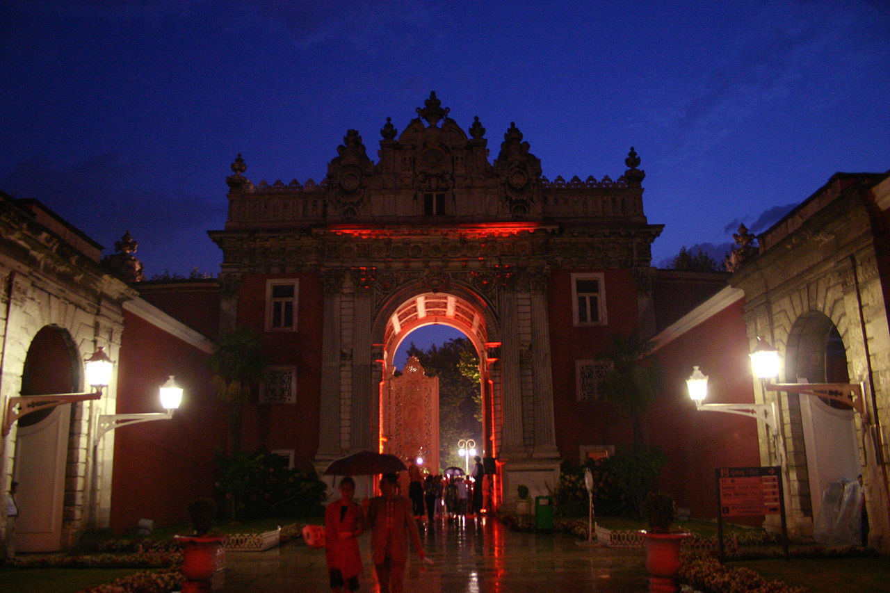
Crystal staircase and ceremonial halls where the empire's late sultans received diplomats.
Shifted court residence from Topkapı to European-style waterfront modernity.
Bosphorus façade rival to Ortaköy mosques downstream.
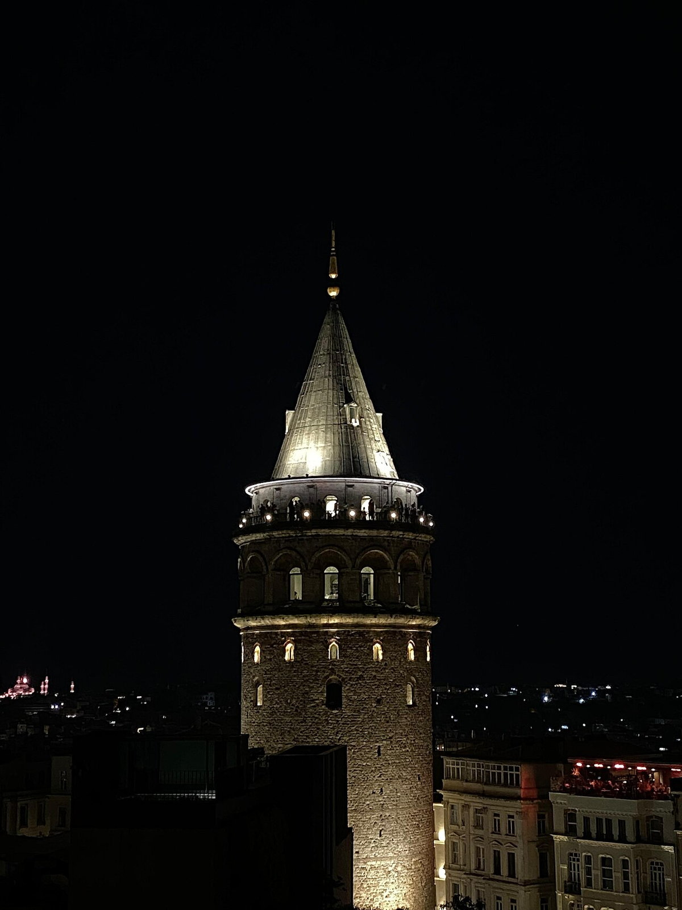
Genoese watchtower turned observation deck over the Golden Horn. Queues peak at sunset for panoramic photos.
Part of Genoese Galata's walls; Ottoman and modern restorations adapted it for fire watch and tourism.
The vertical marker between historic peninsula and Beyoğlu nightlife.
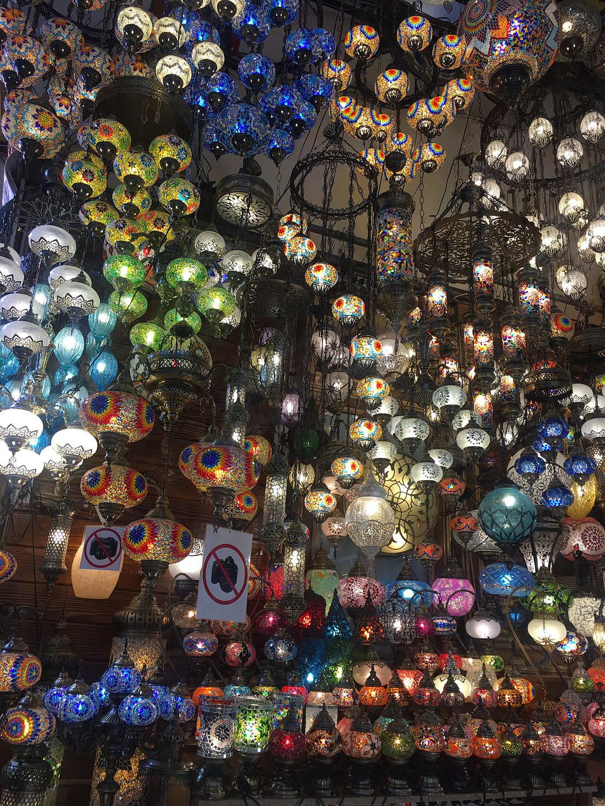
Labyrinth of jewellery, textile, and souvenir shops under brick vaults. Named gates open onto different neighbourhoods.
Mehmed II's charter shops grew into a walled commercial city-in-miniature between Beyazıt and the Golden Horn.
Still a working wholesale and retail hub beneath the tourist surface.
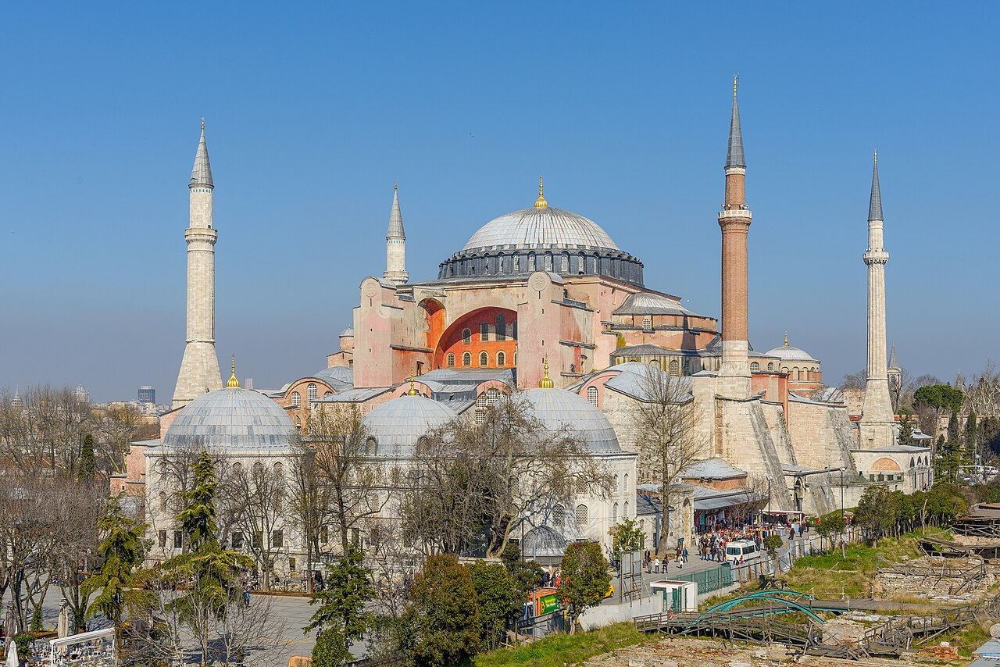
Former patriarchal cathedral, later mosque, now a museum-mosque complex famed for its immense central dome and marble revetment.
Built as the Great Church of Constantinople; Ottoman conquest added minarets and furnishings; modern Turkey alternated museum and prayer use.
A hinge monument between Roman, Byzantine, and Ottoman histories.
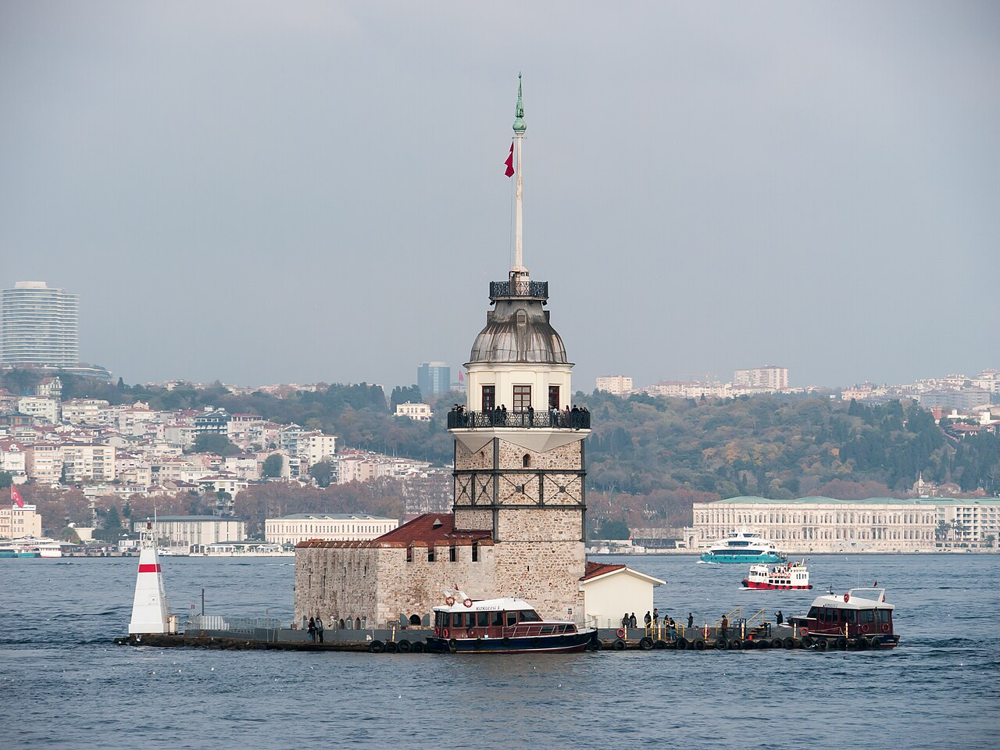
Small tower restaurant on a Bosphorus islet reached by shuttle boats from both shores.
Byzantine chain anchor point became a lantern station and café landmark.
Vertical punctuation visible from Üsküdar promenade.
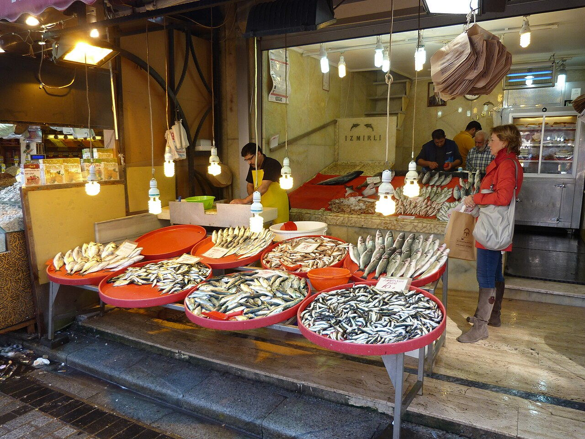
Aromas of saffron, sumac, and lokum under brick domes near the New Mosque.
Commissioned from Egyptian trade revenues; still mixes wholesale with tourist retail.
Sensory anchor between Yeni Cami and Galata Bridge commuters.
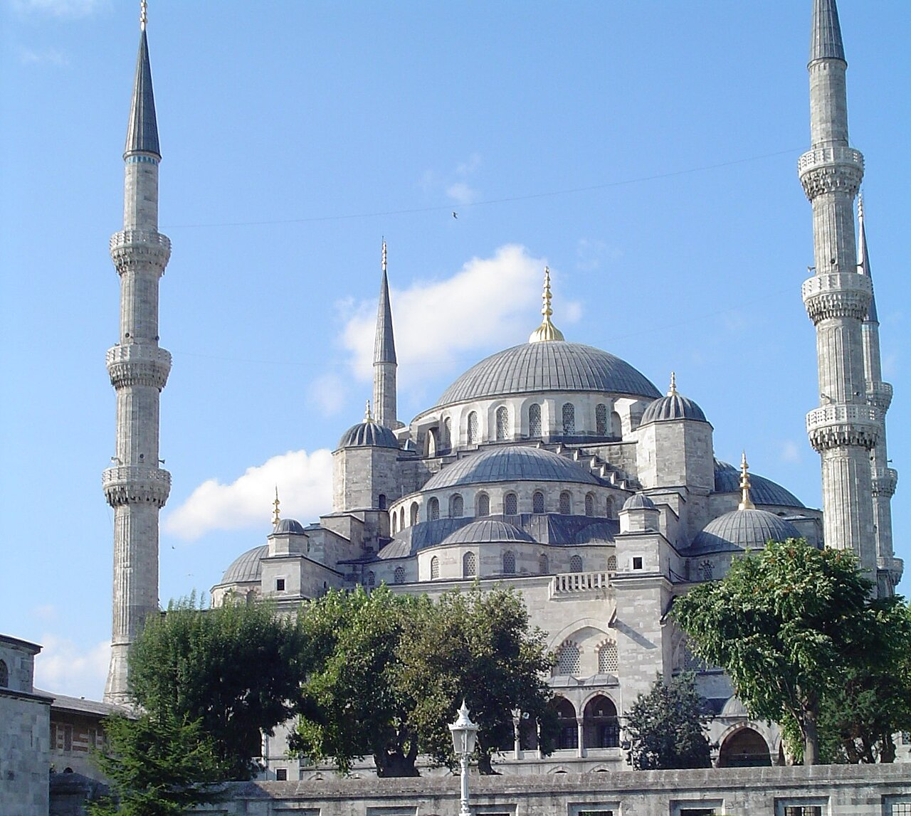
Six-minaret imperial mosque facing the Hippodrome, named for İznik tiles that tint the prayer hall interior.
Commissioned by Ahmed I as an imperial foundation with külliye dependencies around the square.
Sultanahmet's skyline pair with Hagia Sophia defines tourist Istanbul.
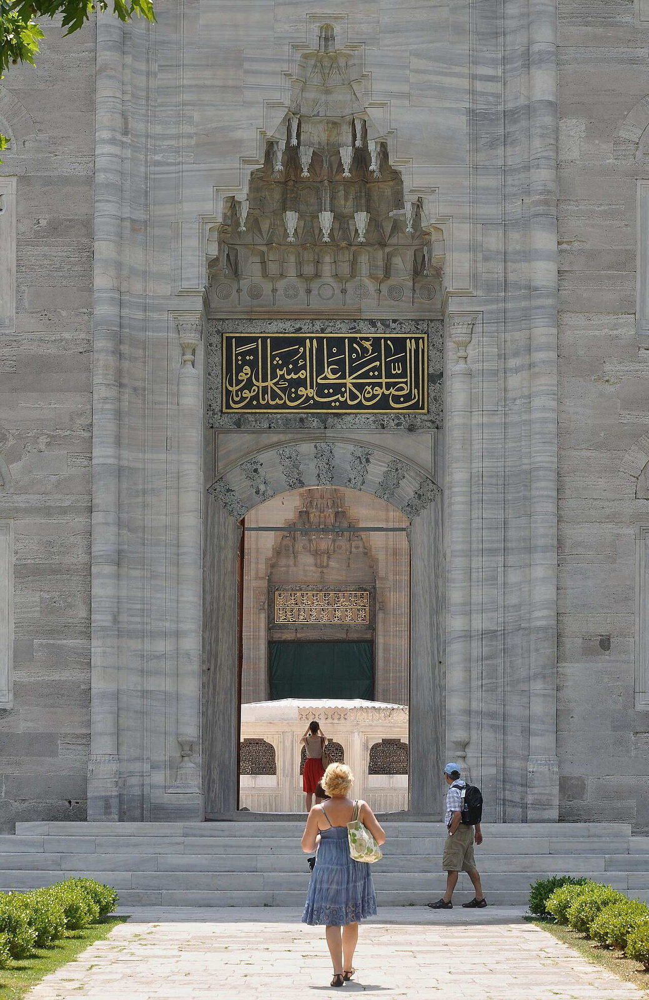
Sinan's largest mosque complex with terraces overlooking Golden Horn ship traffic.
Imperial foundation mosque crowning the city's third hill above the bazaars.
Architectural peak of classical Ottoman Istanbul.
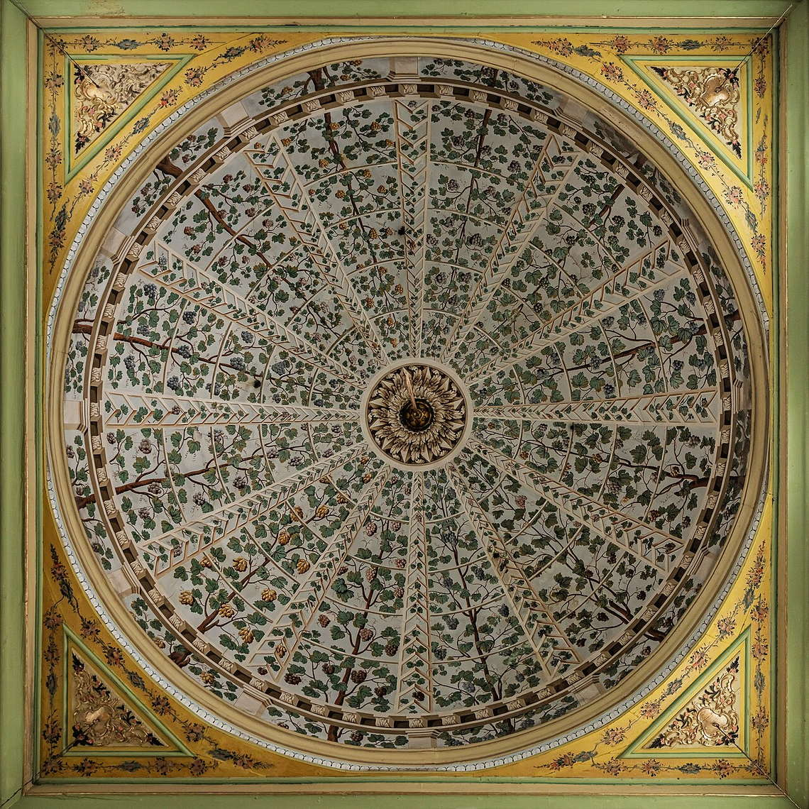
Sultan's palace on the Seraglio Point with treasury, harem ticket sector, and terraces over the Golden Horn and Marmara.
Primary residence until Dolmabahçe; collections of arms, porcelain, and relics accumulated across reigns.
Essential context for Ottoman court life above the old harbour.